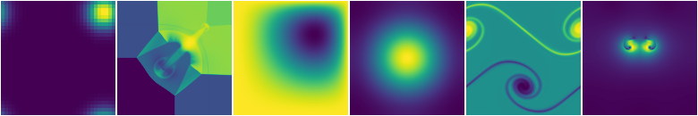

Introduction to pyro
pyro is a simple framework for implementing and playing with hydrodynamics solvers. It is designed to provide a tutorial for students in computational astrophysics (and hydrodynamics in general) and for easily prototyping new methods. We introduce simple implementations of some popular methods used in the field, with the code written to be easily understandable. All simulations use a single grid (no domain decomposition).
Note
pyro is not meant for demanding scientific simulations—given the choice between performance and clarity, clarity is taken.
pyro builds off of a finite-volume framework for solving PDEs. There are a number of solvers in pyro, allowing for the solution of hyperbolic (wave), parabolic (diffusion), and elliptic (Poisson) equations. In particular, the following solvers are developed:
linear advection
compressible hydrodynamics
shallow water hydrodynamics
multigrid
implicit thermal diffusion
incompressible hydrodynamics
low Mach number atmospheric hydrodynamics
Runtime visualization shows the evolution as the equations are solved.